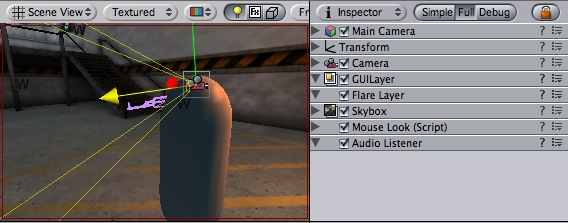
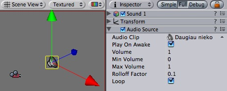
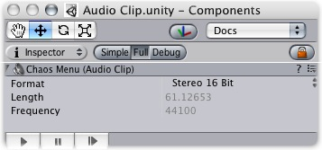

Previous
Previous
Unity uses OpenAL to implement immersive 3D audio. Adding sound to a game is one of the final touches that make a game feel like a complete product. Using 3D positioned audio effects and well chosen music creatively can even add to the game play and greatly affect the mood of the final product.
In short, adding sounds to a game consists of adding sound assets to the project, attaching an Audio Listener to the main camera object and attaching Audio Sources to game objects.
Scripting
Audio is triggered from scripting. See the documentation on the AudioListener, AudioSource and the AudioClip classes in the Script Reference for more information on scripting audio.
Audio Listener
The Audio Listener acts as a microphone-like device. It receives input from any given Audio Source in the scene and plays sounds through the computer speakers. It is traditionally attached to the main Camera.

The Audio Listener, attached to the Main Camera
Properties
The Audio Listener has no properties. It simply must be added to work.
Details
The Audio Listener works in conjunction with Audio Sources, allowing you to create the aural experience of your games. When the Audio Listener is attached to an object in your scene, any Sources that are close enough to the Listener will be picked up and played through the player's computer speakers. Each scene can only have 1 Audio Listener to work properly.
As long as the Sources are in mono format, the Listener will automatically position the sound in the correct speaker, at the correct volume. Stereo Sources will automatically play in both speakers. For example, if your character walks off a street into a night club, the night club's music should probably be stereo, while the individual voices of characters in the club should be mono.
You should attach the Audio Listener to either the main camera or to the game object that represents the player. Try both to find what suits your game best.
Hints
- Each scene can only have one Audio Listener.
- You access the project-wide audio settings using the AudioManager, found in the Edit->Project Settings->Audio menu.
Audio Source
The Audio Source takes an Audio Clip and plays it from a position in the world.

The Audio Source in the scene view and Inspector
Properties
| Property: | Function: |
|---|---|
| Reference to the sound clip file that will be played | |
| If enabled, the sound will start playing the moment the scene launches. If disabled, you need to start it using the Play() command from scripting. | |
| How loud the sound is at 1 world unit's (1 meter) distance from Audio Listener. | |
| The minimum value of the sound. No matter how far away you get, the sound will get softer. | |
| How loud the sound gets at the loudest. No matter how close you get, the sound will never get louder. | |
| How fast the sound fades. the higher the value, the shorter the range the Listener can hear the sound. | |
| Enable this to make the Audio Clip loop when it finishes playing. |
Hints
- The key to a nice sound environment is tweaking the Rolloff Factor.
- The 3D audio effects will only work for mono audio clips. Stereo audio clips will be mixed as-is into the sound output.
Audio Clip
Audio Clips are used by Audio Sources to represent the audio asset imported into Unity.

The Audio Clip
Audio Clips just work. The only thing you should have to do with them is reference them from within Audio Sources.
Properties
Sound assets only have 3 read-only properties.
| Property: | Function: |
|---|---|
The format the sound is stored in. Unity supports 4 raw formats and one compressed.
| |
| The duration of the sound file in seconds. | |
| The sampling frequency of the file. |
Supported sound formats
Unity currently supports the following file formats:
- AIFF
- Both mono and stereo. The sound will be stored as-is inside the player-data. No compression will be attempted.
- WAV
- Both mono and stereo. The sound will be stored as-is inside the player-data. No compression will be attempted.
- MP3
- Mono and stereo. Note that the audio will be uncompressed in the editor and stored uncompressed in the player. If you want to conserve space, use Ogg Vorbis files instead.
- Ogg Vorbis
- Both mono and stereo. The file will be stored compressed in the player-data and streamed on the fly. When using Ogg vorbis it is recommended to always use 44khz frequency.
Stereo or Mono?
Stereo sounds are always played as is. They are not faded out over distance and they do not have panning. This makes them optimal for music and ambient sources.
Mono sounds always fade out over distance and do panning. This is good for all effects requiring 3D positional sound.
Choosing the right format
For music you should always use the ogg vorbis format. The frequency should be 44khz and it should be stereo. (44 khz is recommended since playback will be faster than with 22khz)
Short audio clips (eg. foot steps, bullet explosion) you should use AIFF or WAV with mono and either 22khz or 11khz. Usually you should not use 44khz since that takes up too much disk space and the quality difference is not hearable.
Long audio clips should use ogg vorbis and mono. A good rule of thumb is that if a sound file is more than 200k uncompressed, then it makes sense to use ogg vorbis and stream the sound instead (when using ogg vorbis, always choose 44khz).
Hints
- Stereo sounds are always played as-is. If you want to use attenuation and other 3D audio effects, use mono sounds.
- You can get a free Ogg Vorbis converter from http://sbooth.org/Max (Mac) or from http://www.rarewares.org/ogg.html (Windows)